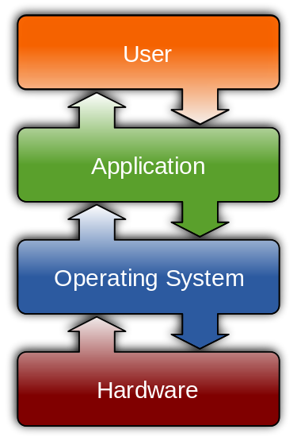

Software
Accounting Architecture

Hardware is the first component of Technology. Although every part of this section has relevance towards implementing the principles in the information life cycle, software is the most important part.
The Role of Software
Software performs all of the automated and facilitates all of the manual tasks in the information system. Software stores and retrieves data; software analyses and generates reports; software provides end-user interfaces and serves web content. Without software, hardware is impotent.
Firmware
One important subset of software is firmware. Firmware provides hardware control for electronic devices, including computers and peripherals, consumer electronics and automobiles and aircraft. Although firmware was traditionally stored on non-volatile read-only memory (ROM), currently firmware is more commonly stored on flash memory. Hence the term “flashing” for updating firmware. The practice of updating firmware is much more common in the Internet era because the distribution of updates is easier and the threat of exploits is greater.
Firmware Interface
Because devices are idiosyncratic, firmware manifests in very different ways. However, for workstations and servers, the firmware interface is usually Basic Input/Output System (BIOS) or, more recently Unified Extensible Firmware Interface (UEFI). The difference between these two is not important for our purposes, except that UEFI adds support for newer components of the information system, such as larger storage disks and access to network devices before booting the operating system.

Bootloader
Although this is frequently transparent (perhaps overly so) to Windows and OS X users, the next step after the hardware initialization by the BIOS or UEFI is not to load the operating system directly. Operating systems require a boot loader in order to initialize. The boot loader loads the operating system, and then the operating system takes control. It is also possible for a boot loader to initialize another boot loader that, in turn, loads the operating system. This process is called chainloading
.
Operating System
The operating system provides user applications access to the computer hardware.
Time-sharing
Early operating systems focused on time sharing. At the time, computers were primarily mainframes with multiple dumb terminals. These dumb terminals competed for the mainframe's resources, and time-sharing operating systems determined how to allocate resources to jobs submitted by each of the terminals.
Users and Tasks
Early smart terminals (i.e., PCs) no longer needed time-sharing operating systems because only one application could execute at a time. These PCs were single-user, single-task. As workstations became more sophisticated, operating systems could support multi-user and multi-task environments. These are exactly as they seem: operating systems that support multiple different user logins and multiple simultaneous applications. Once operating systems became multi-task, they once again became time-sharing. However, this time sharing focused on local applications and not dumb terminals.
Full Circle
In the Internet era, we have returned again to the original time-sharing model, now servers must focus on allocating resources to web clients that access hosted web resources. Unlike the dumb terminals of the past, these web clients have their own operating systems, but they forego some functionality of workstations in favor of offloading processing requirements to remote servers.
ROMs
One popular contemporary form of thin clients is the mobile device. The two most widely used systems on mobile devices are Android and iOS, and they are somewhat unique in two aspects. First, although they are multi-task, they are single-user. Second, although they have the functionality of operating systems, they are, in fact, firmware.
Forget about Windows and OS X
Although Microsoft Windows and Apple OS X are the two dominant desktop computer operating systems, these are not nearly as relevant in all other components of the information system (e.g., servers, mobile devices, firmware). Unix, BSD and Linux run the majority of information system hardware.
UNIX
- 1964: MIT, AT&T Bell Laboratories and General Electric collaborate on a time-sharing operating system called Multics (Multiplexed Information and Computing Service).
- 1969: Researchers at Bell Labs became dissatisfied with Multics and decided to develop an alternative operating system, originally called Unics (Uniplexed Information and Computing Service), but they subsequently changed the name to UNIX. (UNIX is the trademark for the Unix operating system.)
Unix Philosophy
The Unix engineers operated under an implicit philosophy, which continues to govern coding practices in several software communities.
Write programs that do one thing and do it well.
– Doug McIlroy
[T]he power of a system comes more from the relationships among programs than from the programs themselves.
– Brian Kernighan and Rob Pike
KISS
One popular representation of the Unix philosophy is KISS (Keep It Simple, Stupid!) which serves as a reminder that simplicity is more virtuous than complexity.
Additional Principles
- Rule of Modularity: Write simple parts connected by clean interfaces.
- Rule of Composition: Design programs to be connected to other programs.
- Rule of Parsimony: Write a big program only when it is clear by demonstration that nothing else will do.
- Rule of Diversity: Distrust all claims for “one true way.”
- Rule of Extensibility: Design for the future, because it will be here sooner than you think.
Portability
- 1972: Unix was rewritten in the C programming language thereby shattering the assumption that something as complicated as an operating system must be written in hardware-specific assembly language. Despite this transition, Unix continued to contain some machine-specific code, and engineers focused on only one or a few architectures at a time.
(Remember, at this time, CPU architecture differed between machines; no standardized x86 or ARM processors existed.)
Licensing
- 1973: AT&T began selling UNIX licenses—AT&T was a regulated company and could only sell licenses and not software—to universities. Unlike common current software licenses, UNIX licenses included source code and no other support. The availability of source code, the lack of commercial support and the distribution of licenses to universities motivated the development of communities that supported, modified and ported Unix to alternative hardware.
- 1978: Microsoft purchased a UNIX license and began creating Xenix for what Bill Gates believed was the impending proliferation of personal computers.
Another Microsoft Aside
Microsoft eventually abandoned Xenix in favor of MS-DOS, but the existence of Xenix is evidence of a very important point: Unix, and other subsequent Unix-like operating systems, are not merely alternatives to Microsoft Windows. Unix was the operating system of choice before anyone had heard of Microsoft.
System V
- 1983: Bell Systems broke up after an antitrust case, and AT&T became able to sell Unix. AT&T released a commercialized Unix System V and forbade access to Unix source code, which essentially ended community Unix development.
Knowing no other model than secrecy for collecting profits from software and no other model than centralized control for developing a commercial product, AT&T clamped down hard on source-code distribution.
– Eric Raymond
Unix Impact

BSD
- 1974: AT&T Bell Laboratories licensed UNIX to UC Berkeley.
- 1978: Berkeley released 1BSD (Berkeley Software Distribution) as an add-on to Unix 6.
- 1979: Berkeley released 3BSD (aka Virtual Memory Unix or VMUNIX) as a complete operating system. Consumers of 3BSD required an AT&T Unix license.
- 1980: The Defense Advanced Research Project (DARPA) funded the creation of the Computer Systems Research Group to develop a Unix for ARPAnet.
- 1980: CSRG released 4BSD as the preferred operating system for many Unix licensees, including Bell Labs, who incorporated BSD code into Unix.
Another Standard
Despite the appeal of both System V Unix and BSD Unix, disputes arose between the programming communities. In an attempt to reconcile differences, the Institute of Electrical and Electronics Engineers (IEEE) developed a set of Portable Operating System Interface (POSIX) standards based on System V Unix which continue to govern Unix and Unix-like operating systems today. The list of POSIX-certified operating systems contains the three most prominent Unix offerings: IBM AIX, HP-UX and Oracle Solaris. Although BSD continues not be POSIX-certified, it is mostly POSIX compliant.
BSD Becomes Free
- 1989: CSRG began to distribute the network code from 4.3BSD, which contained no AT&T code, as Network Release 1 (Net/1) under the free BSD license.
- 1991: With considerable help from the development community, CSRG rewrote almost all remaining proprietary files and subsequently released Network Release 2 (Net/2) as a nearly complete operating system without any AT&T code.
- 1992: CSRG wrote the six remaining files necessary to complete Net/2 and released it as 386BSD for Intel's 386 processor.
- 1993: Two communities formed to support 386BSD under different philosophies: NetBSD for technical users and FreeBSD for on less technical PC users.
Opponents of BSD
In 1992, AT&T Unix Systems Laboratories (USL) sued Berkeley claiming that Net/2 contained proprietary code. After two years, the two sides reached a settlement that required minor changes and essentially exonerated Berkeley. The modifications resulted in 4.4BSD-lite.
After the Suit
Although Berkeley was exonerated, the legal uncertainty between 1992 and 1994 encouraged many developers to transition to Linux. However, BSD is still widely used and supported, and many flavors exist. The most prominent are FreeBSD, NetBSD, OpenBSD (a fork of NetBSD focused on security) and Mac OS X (and iOS, for that matter). Furthermore, most operating systems, including Microsoft Windows, use network tools from BSD. In 2006, InformationWeek rated 4.3BSD as the “Greatest Software Ever Written” and the “theoretical undergirder of the Internet.”
Linux - The Stars Align
Linus Torvalds began development of the Linux operating system on 25 August 1991. A number of discrete events coalesced to facilitate the initialization of this project:
- Richard Stallman's GNU project started in 1983 had not yet generated a working system, but it contained many useful tools.
- Intel had released the first 32-bit x86 processor: the 80386.
- Net/2 had not yet been ported to 80386.
- Unix licenses were too expensive for private users.
- MINIX, another Unix-like system, was not well suited to 386.
- No widely adopted adopted, free kernel existed.
What is a Kernel, You Might Ask
The kernel is the part of the operating system that interacts with the computer hardware. This is the lowest level of the operating system. The remaining components live in userland because they interact with the user. Depending on the type of kernel, the kernel itself may handle operating system services (monolithic kernel) or these services may be handled by a series of servers in userland (microkernel).


What is a Server, Anyway?
Frequently, the word server is used to identify 1U computers stored in a rack, and it is true that workstations and servers frequently have slight differences in hardware setup (e.g., graphics and I/O capabilities). However, a more appropriate use of the word server
would be software that provides a service.
Daemon
(Yes, that is not a misspelling...)
Daemons are a particularly useful example of software that provides a service. Unlike more visible interactive applications, daemons run in the background without user input. Network, audio and graphics hardware and web and database servers rely on daemons to continually serve content.
Text...
The kernel is the part of the operating system that interacts with the hardware; the shell is the part that interacts with the user. Shells can either be graphical or textual. Textual or text-based user interfaces (TUIs) present the user with an interactive command line. All Unix and Unix-like operating system have at least one TUI shell. Popular examples are the Bourne shell (sh) or the Bourne Again shell (bash).
...and Graphics
Graphical user interfaces (GUIs) present the user with windows, menus, mouse pointers, etc. These are frequently part of desktop environment, which is a shell plus a collection of related applications. GNOME and KDE are two popular desktop environments. GNOME uses GNOME Shell and KDE uses the Plasma shell.
Modularity
Shells are an excellent example of the principle of modularity. Unlike Microsoft Windows and OS X that each ship with one graphical and one text shell, Unix and Unix-like operating systems allow for multiple text and graphical shells that are each developed separately. The user can switch between shells at will. (Thanks to community support for the BSD components in OS X, it can be possible to install alternative shells there, as well.)
Linux - The Early Years
- 1991: Linus released Linux kernel 0.01 under its own license with some GNU userland tools.
- 1992: Linus released Linux kernel 0.99 under GNU GPL. He subsequently asserted that the license change was the best thing he had ever done. At the same time, MINIX author Andrew S. Tanenbaum stated, “Linux is obsolete,” in part, because it relied heavily on ‘weird’ x86 processors.
If 386BSD had been available when I started on Linux, Linux would probably never had happened.
If the GNU kernel had been ready last spring, I'd not have bothered to even start my project.
Linux Today
Linux is perhaps the most widely adopted operating system. 70% of internet servers, 55% of mobile devices and 97% of supercomputers run Linux. It is also a popular choice for IBM System z mainframes virtual machines, single-board computers and the Internet of Things.
Virtualization
Just as time-sharing operating systems attempt to allocate hardware resources efficiently, virtualization software attempts to maximize the number of platforms that can access the same hardware simultaneously. A hypervisor imitates the computer hardware and passes functionality to the virtual machine. The underlying system is the host, and the virtualized system is the guest.

Let Us Install an OS!
Extra Credit Presentations
- Recount a brief history of the GNU project and explain the name GNU/Linux and whether it is the most appropriate name for the popular operating system. Express and provide support for your own opinion in the debate.
- Give a historical perspective of (a) Microsoft's operating systems or (b) Apple's operating systems.
- Provide a history of Ubuntu Linux and explain the role that it plays today.
- Introduce Red Hat and describe the unique role it has played in the tech industry.
Homework Assignment
Part 1
Investigate various Linux distributions or BSD flavors and identify one that you would use. Distrowatch is an excellent resource to begin your search. Explain your reasons for the distribution that you selected and upload your memo to Dropbox. This assignment is similar to the Technology memo only much smaller, so your memo should attempt to convince a hypothetical supervisor why to adopt your Linux distribution. (So that no confusion exists, no, your Technology report should not be based on this memo.) I will award extra credit if you also include in your memo a recommendation for desktop environment.